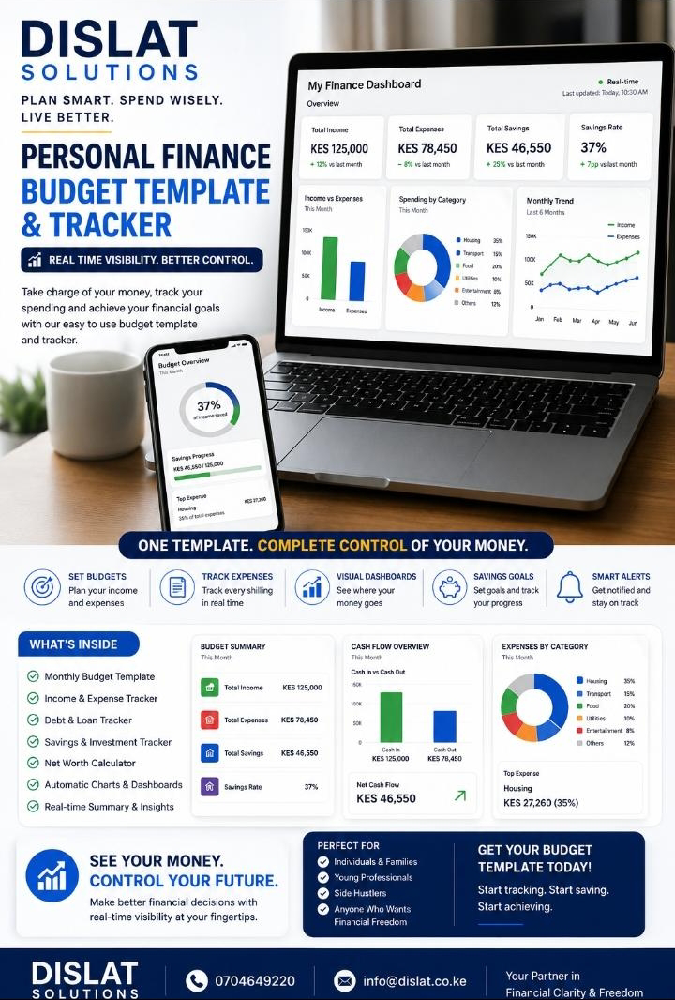

Budget workbook
Monthly income, expense, and planning templates that are easy to maintain.
Plan. Track. Control.
Practical spreadsheet and dashboard templates for budgeting, expense tracking, savings goals, cash flow visibility, and management reporting.

What is included
Monthly income, expense, and planning templates that are easy to maintain.
Visual summaries for cash flow, spending categories, savings, and performance.
Simple checks, alerts, and review routines that improve financial discipline.
Use cases
Implementation
Define what needs to be tracked and who reviews it.
Set up categories, formulas, dashboards, and sample data.
Show users how to enter, review, and interpret the data.
Refine the template after real use.